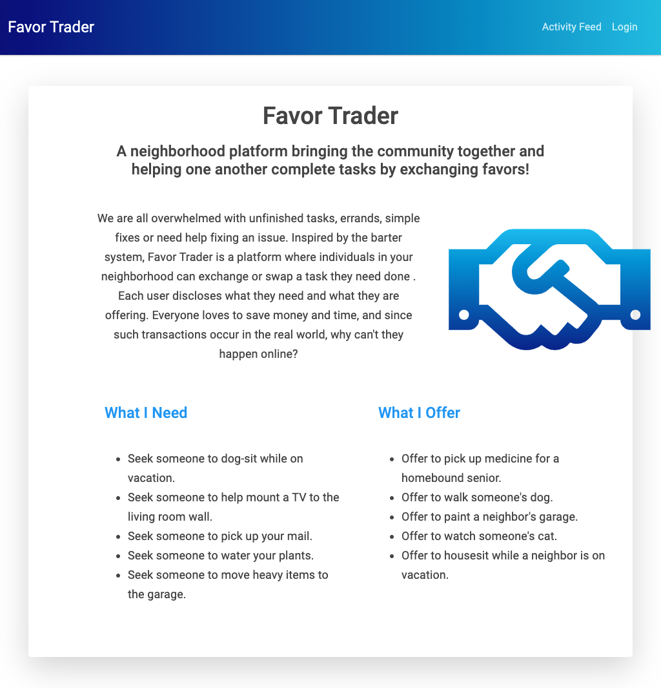
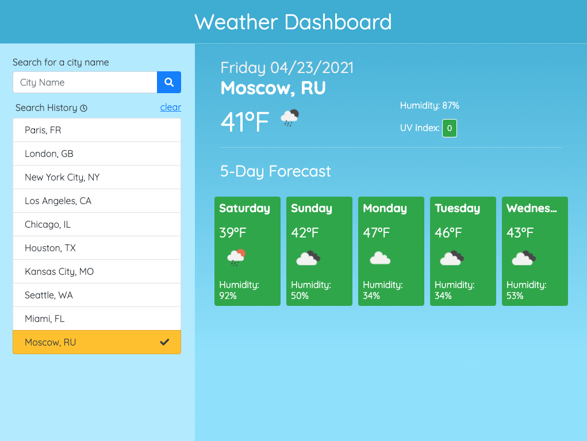
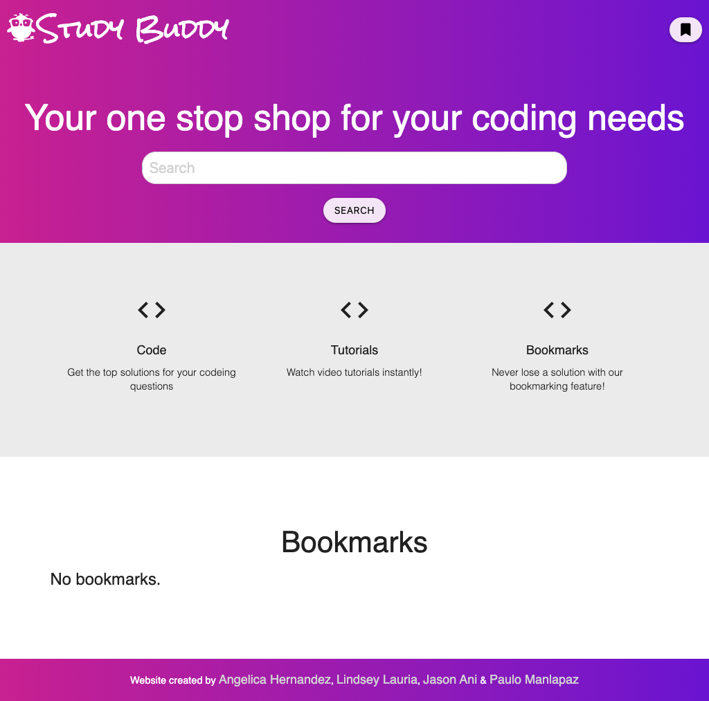

Hi, I'm Lindsey. I am a web developer and designer. Designing user interfaces and building clean, effective front end solutions is something I love to do. I enjoy creating, problem solving and learning new things.
About
Portfolio
Favor Trader
Visit GitHubThe application provides the user with the ability to gather learning resources and coding solutions for various learning styles by connecting to StackExchange and YouTube APIs. The application provides 3 suggestions from each of the API resources. A Bookmarks feature helps the user to save their favorite content to local storage. This project uses Materialize and jQuery in addition to YouTube and StackExchange APIs. View demo
Weather Dashboard
Visit GitHubWeather Dashboard uses the OpenWeather API to retrieve weather data. The user may search for a city retrieve the current weather in addition to a five day forecast for that city. The application saves a list of recently searched for cities to quickly retrieve tha weather data. This project uses Bootstrap, jQuery and Moment.js. View demo
Study Buddy
Visit GitHubThe application provides the user with the ability to gather learning resources and coding solutions for various learning styles by connecting to StackExchange and YouTube APIs. The application provides 3 suggestions from each of the API resources. A Bookmarks feature helps the user to save their favorite content to local storage. This project uses Materialize and jQuery in addition to YouTube and StackExchange APIs. View demo
